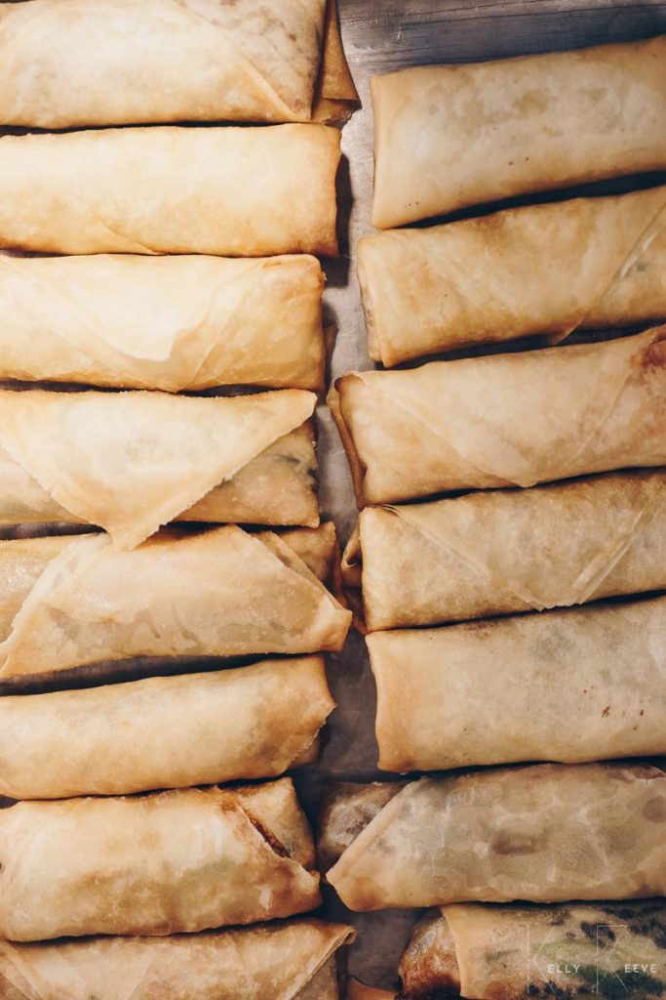

Vegan Spring Rolls
Ingredients:
- 50g vermicelli
- 1 clove of garlic, crushed
- 70g bean sprouts
- 5ml (1 tsp) white sugar
- 15ml (1 tbsp) corn oil
- 15ml (1 tbsp) chopped coriander including stalks
- pinch salt
- pinch white pepper
- 20 small sheets of spring roll pastry
Preparation:
- Soak the vermicelli in boiling water for a few minutes, rinse
- Pound the garlic in a pestle and mortar until crushed.
- Gently heat the oil in a wok and add the garlic and fry until golden brown regulating the heat where
necessary so as not to burn the garlic. add the bean sprouts and continue to cook for approx 1 minute.
- Add the vermicelli, oyster sauce, sugar, salt, pepper and coriander at the end.
- mix until you get a dense dough
- Taste and add more seasonings if necessary.
- Turn out onto a tray and allow to cool.
- Make a paste using a mix of flour and water; this will be used as a glue to stick the spring rolls.
- Place a small amount of paste at one corner of the spring roll pastry.
- Place a small amount of filling at the opposite end and roll into spring rolls folding tightly and securing
at the paste end.
- Deep fry at 190°C until golden and crisp and drain onto kitchen paper.